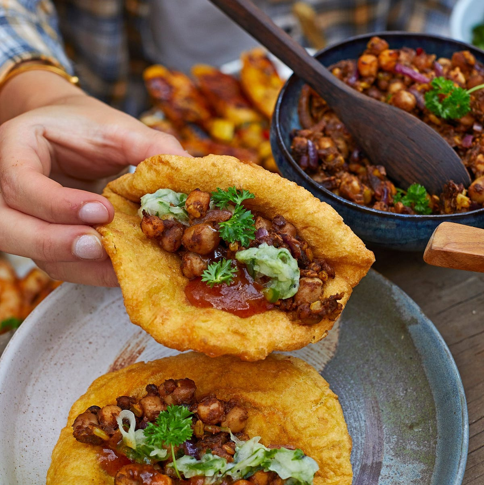

Doubles
The ultimate Trini street food and a national treasure. Two soft, fluffy bara filled with curried channa...
The ultimate Trini street food and a national treasure. Two soft, fluffy bara (fried flatbread) filled with curried channa (chickpeas) seasoned with curry, cumin, and pepper. You customize it with your choice of toppings - tamarind sauce, pepper sauce, cucumber chutney, or shadon beni. Best enjoyed hot from the vendor, any time of day or night. It's cheap, filling, and pure comfort in your hands.